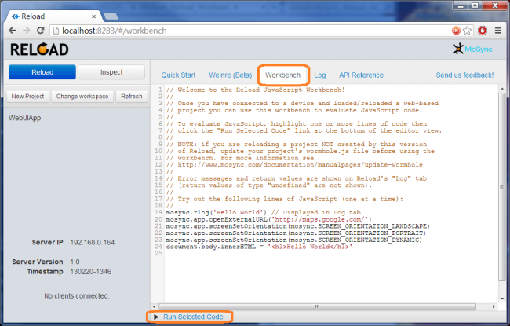

MoSync Reload has a JavaScript Workbench that helps speed-up and simplify the development of the JavaScript code needed by you app. Using the Workbench you can quickly try out JavaScript statements and see their effect. This tutorial will get you started.
When you have installed MoSync Reload, you can find the JavaScript Workbench under the Workbench tab in the Development UI:

Before you start using the Workbench, do the following:
Note: if you want to reload a web-based project that was not created in Reload version 1.0 or later, you will need to update your project's /wormhole.js file before using the workbench. For more information, see Updating your Wormhole App.
To evaluate JavaScript, highlight one or more lines of code then click the "Run Selected Code" link at the bottom of the editor view.
We have provided some simple JavaScript statements in the default Workbench view for your to try:
mosync.rlog('Hello World') // Displayed in Log tab
mosync.app.openExternalURL('http://maps.google.com/')
mosync.app.screenSetOrientation(mosync.SCREEN_ORIENTATION_LANDSCAPE)
mosync.app.screenSetOrientation(mosync.SCREEN_ORIENTATION_PORTRAIT)
mosync.app.screenSetOrientation(mosync.SCREEN_ORIENTATION_DYNAMIC)
document.body.innerHTML = '<h1>Hello World</h1>'
The first statement makes use of mosync.rlog to send a log message back to the Reload Development UI (nothing is visible on the client side, but the message itself will appear under the Log tab). The second statement opens an external URL. The next three statements affect the orientation of the client app. (Remember to turn on screen rotation on your device, if applicable) The final statement rewrites the HTML body tag of the app, and replaces it with the H1 heading "Hello World" (you can get your app back by pressing "Reload" in the Development UI).
Try all the statements at least once and check that everything works as advertised, then you are ready to move on to something a little more complex.
To give a sense of what you can do with the Workbench in terms of interactively trying out code, try the following example:
// Copy this code to your Workbench.
// 1. Select and run to start timer:
myapp = {}
myapp.counter = 2000
myapp.interval = 1000
myapp.fun = function() {
document.body.innerHTML = "<h1>Hello " +
(myapp.counter++) + "</h1>"
setTimeout(myapp.fun, myapp.interval)
}
myapp.fun()
// 2. Now test to change myapp.counter and myapp.interval
// by editing the lines above, select one of them or both
// and then run the selected code. Enjoy the result.
// 3. Select and run to stop timer:
myapp.fun = function() {}
Any errors and return values will show up under the Log tab.
Note that you can select any part of the text and evaluate it as JavaScript code.
For example, try selecting:
myapp.counter
And evaluate (run) the code. Look in the Log tab to see the value.
Now select:
myapp
And evaluate (run) the code. Again, look in the Log tab to see the value.
This is a useful way of quickly inspecting the value of variables and teh return value of functions.
To instantly be able to try out pieces of code is useful for both learning to program and developing code.
Error messages from the code evaluated in the Workbench are under the Log tab. Similarly, return values except those of type "undefined" are also shown on the Log tab.
Try selecting some random parts of the code (incomplete statements) in the Workbench and see which errors are produced. Try to do a computation with an undefined variable and see what happens. Try to call a function that is not defined.
Some examples, evaluating foobar and foobar() (assuming foobar is not defined):
foobar --> ReferenceError: foobar is not defined foobar() --> ReferenceError: foobar is not defined